RTA-SUM SPM User Guide
Introduction
This User Guide provides a guideline for the configuration and integration of the ETAS developed RTA-SUM SPM. RTA-SUM SPM module has been developed towards the Software Defined Vehicle requirements, specifically, the SDV-8217 specifications and related specifications listed in Section References. General guidelines on the common steps and workflow for RTA-SUM integration can be found in RTA- SUM Getting Started Guide.
Definitions and Abbreviations
Terms and Abbreviations |
Definitions |
|---|---|
AUTOSAR |
AUTOmotive Open System ARchitecture |
BSW |
Basic Software |
CAN |
Controlled Area Network |
CDD |
Complex-Device Driver |
CanIf |
Can Interface AUTOSAR BSW Module |
PGTT |
Power Graph Traversal Table |
PM |
Power Manager |
RTE |
Run-Time Environment AUTOSAR middleware between Application Software Layer and Basic Software |
SE |
Software Entity (Assume it as generic software module/function or Software Service) |
SM |
Software Manager |
SPM |
Software/Power manager |
SUM |
Standardized Utility Module |
SWCD |
Software Component Description |
SoAd |
Soacket Adaptor AUTOSAR BSW Module |
Module Overview
The RTA-SUM SPM, Software/Power Manager, is a Complex-Device Driver of the standardized architecture of AUTOSAR. The SPM contains in this architecture two sub-modules: the SM and the PM. Both of them contribute to the global functionalities of the RTA-SUM SPM. So that they are just mentioned as generic “SPM” at the scope fo this document. SPM acts itself as a manager for the activation and the deactivation requests of specific Software Entities (Services) and hardware resources. A SPM instance can control the status of a remote Software Services (i.e. hosted on a remote device) by the means of a RPC. The RPC requires the SPM instances as interfaces for the communication messages exchange and the resource management. A Software Services can directly request its own activation/deactivation to the SPM (local request) or SPM activates it on base of a remote request. SPM instances define and maintain by configuration, a list of Software Entities and Resources to activate on the base of a received request. Each Software Entity has got its own list of dependencies that takes the name of Power Profile or Activation Profile. Before activating the requested Entity, the SPM shall satisfy the activation/deactivation of all the items in the Activation Profile. This may involves in other activation/deactivation requests to local Software Entities or remote host (sending message to the remote SPM instance). So that the SPM shall be able to manage a recursive communication path to satisfy the incoming request.
RTA-SUM SPM knows the network topology by from the configuration and then from the calibration of a table that is called PGTT (Power Graph Traversal Table). This table contains the route to reach the destination host of a SPM request. Each “harbor” in the route is a remote host. Not all the hosts in the route must contain a requested entity from the source: the SPM instance in the host can just works as a gateway for the request. The PGTT also defines the command to send to the next hop of the network in order to wake-up the remote SPM instance.
RTA-SUM SPM shall also monitor the status of the remote nodes in the network. RTA-SUM SPM can monitor the status of a remote host using the heartbeat communication protocol. This protocol forces each host in the network to send a periodic signal that contains a rolling counter, very close to a real human heartbeat. Whenever a node in the network wants to communicate with another node, the source node can “listen” the heartbeat of the destination one. If the destination node heartbeat is 0, then the destination node cannot be reached by the communication. In this case, the source of the communication starts the diagnostic procedure for raising up a LossOfCom condition. Same value on the opposite side: if a destination node in communication with a source loses the heartbeat of the source, it starts the same diagnostic.
RTA-SUM SPM is a cross-domain module, so that it can exchange information among different ECU domains, by the means of SPM instances communication on different bus system.
RTA-SUM SPM communicates on:
Ethernet for: * Send/Receive an activation/deactivation request to a remote host * Send/Receive request acknowledge and request status to a remote host * Perform a inner-domain selective wake-up
CAN to perform the selective wake-up of a remote host

References
Document Version |
Version |
|---|---|
SDV-2017 “Vehicle Power management Architecture” |
4.0_20231206 |
SDV-8217 - Mechatronic Power Manager Infrastructure Specification |
27.174.0p0 |
SDV-8201 “Service Discovery Extension Specification_27.27.172.3p1” |
27.27.172.3p1 (Release date September 28, 2023) |
Integration into RTA-CAR Project
This chapter aims to provide a guideline for the integration of RTA-SUM SPM module into an RTA-CAR project.
The RTA-SUMs plugin does not include the SPM module. So that you shall manually import the generation scripts of the RTA-SUM SPM into a RTA-CAR project. Beside you shall need to import in the RTA-CAR project the SPM EcucValues arxml file ( the sample file spm_EcucValues.arxml is provided in the release package folder 30_Integration/ ).
Prerequisites
In order to successfully follow this guide:
you shall have the RTA-CAR toolchain installed and you must be familiar with the AUTOSAR specifications, terminology and methodology,
You also must be familiar with the GM specification and GM-SUM modules functionalities
Create SPM module
In order to create the SPM module you shall follow the following steps:
Unzip the contents of the folder RTA-SUM SPM folder in your preferred location
Import in your RTA-CAR project the folder template from SPM-released unzipped folder:
You can copy the folder in your RTA-CAR project location OR import it as a linked resource, as you prefer.
In RTA-CAR, go to the project ECU Configuration and expand the menu Parameter Definition”. You must see the SPM blue container. This container includes all the module configuration containers and parameters. If you don’t see it, try to refresh the project. If it still missing, delete the imported folder and import it again
In RTA-CAR ECU Configuration, click with the right button on folder Other Modules below the root Bsw Modules, and choose Create Spm
Configure Spm module as you prefer
In order to build the Spm in your RTA-CAR project, please make sure you have the building features enable (Build Features in RTA-CAR). You can reach it by the following path in RTA-CAR: Window >>> Preferences >>> Tool Customization >>> Special Features, and then enable the checkbox Build Features. After that press on Apply and CLose.
Now you are able to build the SPM and so to generate the C code and driver SWCD. If you don’t specify an output path, the SPM C code is generated in folder _out.
Module Configuration Overview
Configuration Containers
The SPM appears as a root configuration container as any other RTA-SUM module or Bsw module. The highest hierarchical level for the SPM configuration appears as follows:
Spm
Configuration Hints
SPM ConfigSet
SpmConfiguredPowPrf
Container stores all the SPM instance-known power profiles as configuration container. Each SPM instance shall store at least one power profile as configuration parameter. On the other hand, the upper multiplicity of this container is infinite.
Please pay attention: You can have as maximum number of configured power profiles the value 4294967296. This value of is totally theoretical because not the whole set of combination can define a valid profile identifier (Look SpmPowPrfID too)
Warning
No check are done on the number of configured power profile. The max allowed number is 4294967296 and this is the only performed check.
SpmPowPrfID
This parameter contains the identifier of the specific power profile. The Power Profile identifier is on 4 Bytes. The power Profile identifier contains the power profile associated software service identifier the profile identifier 16 most-significant bits.
SpmRepresentativeProfile
This parameter identifies a representative power profile. A representative profile contains a list of software services as dependency list. Once SPM activates a representative power power profile, then all the software services in the dependency list are in active state and they are under LossOfFunction control. The activation of a representative profile does not look for the activation of the items in the dependency list but just activate the power profile.
SpmPowPrfDepList
This container refers or targets the reference of the SpmConfiguredPowPrf. The container shall define all the dependencies of the current father container. SPM needs to activate all the items (if present) in the dependencies list before putting the status of the father (requested power profile) to activate state.
If a power profile is:
A remote one: so that SPM cannot activate it locally but it shall send a request over Ethernet to the remote SPM instance OR
A Default Profile: The profile is the “tail” of the activation dependencies and it does not have any additional dependency and SPM can directly activate it.
Then the Power Profile does not have any item in the dependency list.
SpmSrvcPduGroupTxRef
The paramter defines the references to the ComIpduGroup that shall be enabled in transmission once that the power profile is activated as software service PDU safety-related data.
SpmSrvcPduGroupRxRef
The paramter defines the references to the ComIpduGroup that shall be enabled in Reception once that the power profile is activated as software service PDU safety-related data.
SpmPgttEntries
Container for the design of the Power-Graph Traversal Table (as specified by GM).

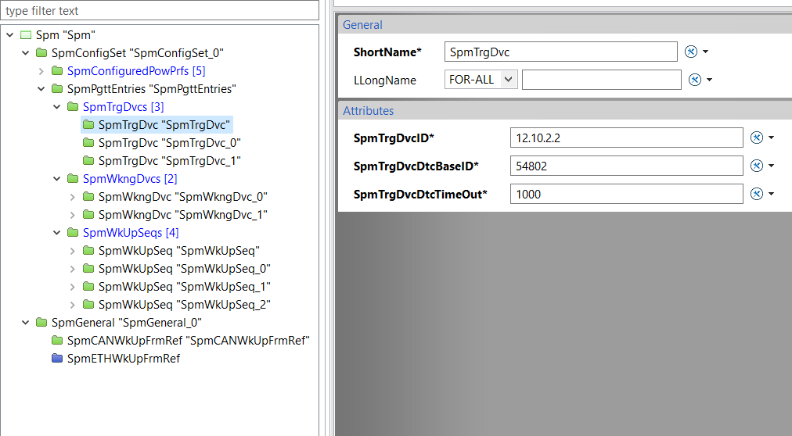
The container contains the following parameters:
SpmTrgDvcID: Identifier (IP address) of the device to reach from the current instance of the SPM
SpmTrgDvcDtcBaseID: 2-bytes identifier for the DTC associated to the Target Device
SpmTrgDvcTimeOut: time window for receiving the heartbeat of the target Device before setting the LossOfNode indication

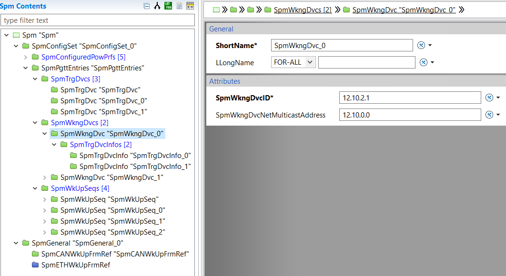
SpmWkngDvcID: Local Ip address of the SPM instance
SpmWkngDvcNetMulticastAddress: Network Multicast IP of the network where to send the heartbeat

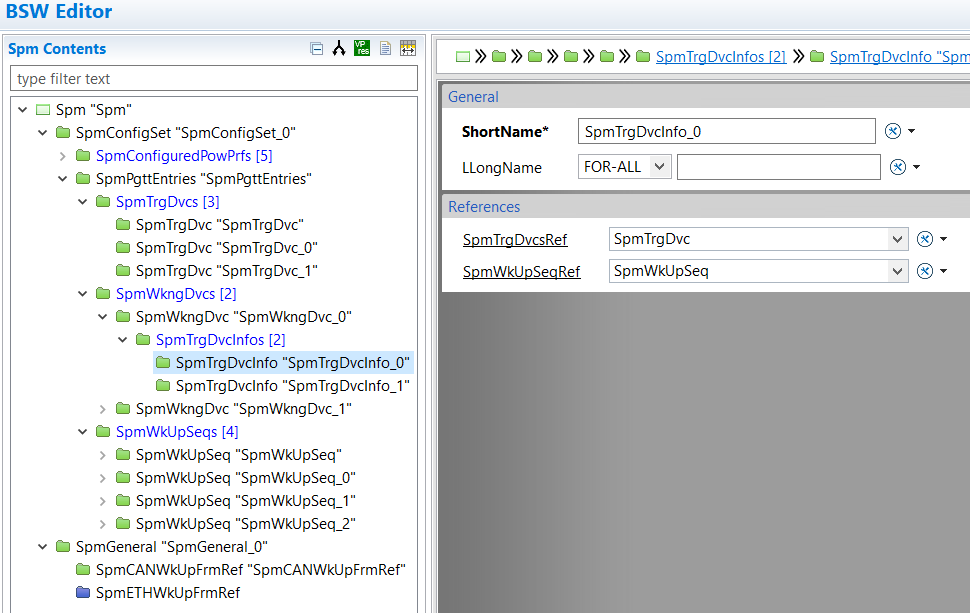
This is a wrapper container:
SpmTrgDvcRef: Reference to the Target Device to be reached
SpmWkUpSeqRef: Reference to wake-up boot sequence to use for reaching the target device

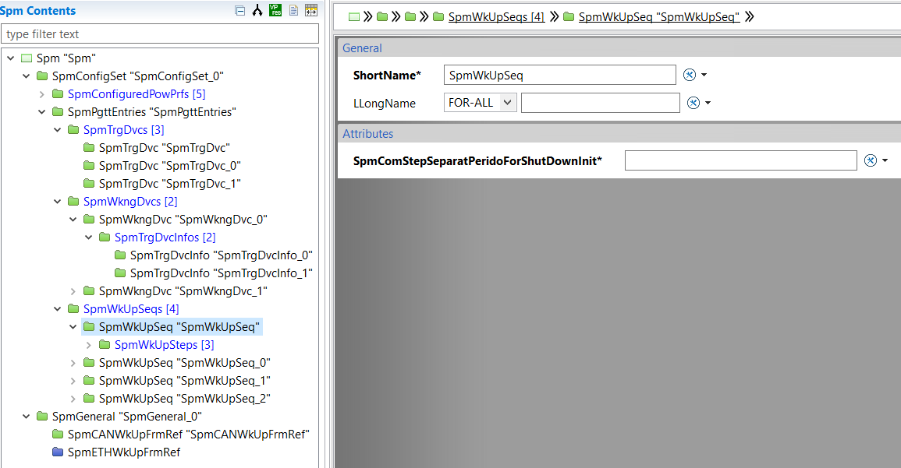
SpmComStepSeparationPeriodForShutDownInit: time separation between step in the reverse order for the shutdown

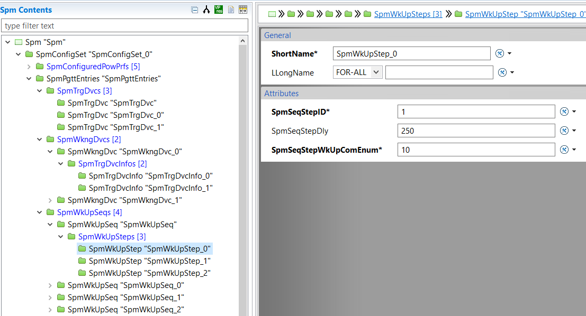
SpmSeqStepID: Wake-up sequence step identifier for sorting the step and define the sequence
SpmSeqStepDly: time separation between the current step and the next
SpmSeqStepWkUpComEnum: Enumerated bit to set in the wake-up frame
SPM General
SpmMainFunctionPeriodicity
Parameter defines the timing period for scheduling the Spm main controller. The Spm main controller evaluates the status of the permit execution considering the SpmPermitExecutionMask value and the SPM instance activation criteria. The value of the parameter is in milliseconds as unit. The parameter datatype is float, this means that when you configure the parameter with a value in the open range (0,1), the the controller is scheduled in microseconds.
If you want to schedule your SPM controller in seconds, you can configure your parameter with a value greater than 1000.
Warning
Please pay attention when you configure this value. No check on the configuration has been implemented yet. According to GM specification the minimum value of the parameter shall be 1000. AN heartbeat might be also transmitted at a lower rate, but we strongly suggest to keep this value to 1 seconds = 1000 ms.
SpmPermitExecutionMask
Parameter defines the permit execution mask. SPM uses this mask to transit the SPM controller in the appropriate state. The permit execution mask is one single byte that implements a bit map. The value of the permit execution mask is computed as follows:
Each bit of the Byte value represents a specific functionality:
If the functionality is not in scope to the SPM instance, then set a 1
Otherwise set a 0
SpmCurrNodeWkUpBitEnum
The parameter contains the Enumerative value for representing the bit that keeps the current SPM instance awaken. This value goes from 0 to 63.
e.g.: If configured value is 3, then SPM current instance stays awaken when Received wake-up frame has the Third bit set to 1 from right.
The SPM evaluates bytes in this order:

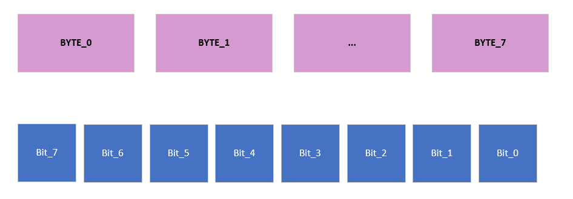
All the data type are managed as bytes array. So that wake-up frame is an array with 8 items with 1 Byte.
If you want to refer to bit 6th (for instance), then value 0x40 is stored in byte at array index 0. At the same time, bit 14th is value still 0x40 but in byte 1.
SpmNameOfWakeUpHelperFunction
The parameter allows to configure the name of the wake-up helper function, in case the Project-specific requires a device Custom wake-up. The parameter is required as per SDV-8217 and it is not mandatory.
SPM CAN Wake-up Frame references
SpmCANWkUpFrmRef
You need to configure two parameters in this sub-containers. The values of the configuration parameters are references to CanIf configured ones as CanIf upper Layer. You can have a single reference for the frame in Tx side, but more than one in Rx side. Please let’s look carefully the names of the parameters for a right configuration.
The periodicity of the CAN Wake Up frame is a configurable value retrieved by SpmCANWkUpFrm_Period_ms parameter (explained detailed in following section).
SpmETHWkUpFrmRef
You need to configure two parameters in this sub-containers. The values of the configuration parameters are references to SoAdIf configured ones as SoAd Upper Layer. You can have a single reference for the frame in Tx side, but more than one in Rx side. Please let’s look carefully the names of the parameters for a right configuration.
Moreover, if the sending of the TC10 pulse is needed, it is necessary to reference a EthSMNetwork (the one configured in the EthSM associated with the Ethernet Switch) in the SpmETHSwitchNetwork configuration parameter. If no EthSMNetwork is referenced, the SPM will not send the TC10 pulse.
The periodicity of the Ethernet Wake Up frame is a configurable value retrieved by SpmETHWkUpFrm_Period_ms parameter (explained detailed in following section).
Calibratable Parameters
Heartbeat periodicity
The HeartBeat’s initial burst phase and steady state periodicity (ms) are calibratable parameters. They can be assigned values in the range [5 - 65535]. The default value of the intial burst phase periodicity is of 5ms. The default value of the steady state periodicity is of 1000ms.
WkUp frame periodicity
The WakeUp frames (CAN and ETH) periodicities (ms) are calibratable parameters. They can be assigned values in the range [5 - 65535].
Both of them are configurable parameter (SpmCANWkUpFrm_Period_ms and SpmETHWkUpFrm_Period_ms).
The default value of the CAN WkUp frame periodicity is the value of the parameter SpmCANWkUpFrm_Period_ms: if it is not configured, it will be 10ms. The default value of the ETH WkUp frame periodicity is the value of the parameter SpmETHWkUpFrm_Period_ms: if it is not configured, it will be 1000ms.
BSW Modules Configuration Hints
Warning
This section is under development. It will be completed internally and then released once RTA-SUM SPM will be officially released for production.
Rte Configuration
The RTA-SUM SPM contains several calibration parameter. These parameters resides in the RTE generated code. The RTE generated code uses Macros from Compiler Abstraction AUTOSAR library. The usage of these Macros requires an additional configuration of the Rte Os/Rte configuration container otherwise a compilation error can appear for Macro RTE_CALPR.
If you use the SDK you have to just check that the following configuration is present in your RTA-CAR project. In case it is not, please add it manually as follows:

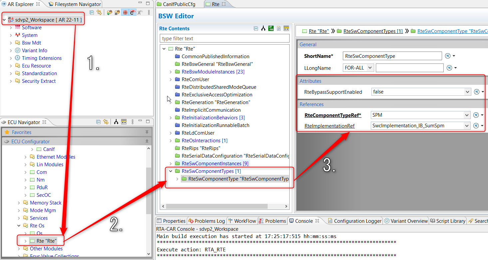
As picture shows, the steps are:
Open your Project
In ECU Configurator, expand “Bsw Modules” and go in Rte Os/Rte
Configure the RteSwComponentType like in the previous picture.
Calibratable Parameters
The HeartBeat’s initial burst phase and steady state periodicity (ms) are calibratable parameters. They can be set to any value within the range of [5 - 65535]. The default value for the initial burst phase periodicity is 5 ms. The default value of the steady state periodicity is 1000ms.
Cdd for communication
In an integration environment, the RTA-SUM SPM needs a Complex-Device Driver configuration in order to redirect the Pdu to/from the CanIf.
This is called Cdd_SPM in SDK release.
The configuration of the Cdd_SPM allows the proper CanIf code generation for RTA-BSW. On the other side, the Cdd_SPM makes possible the proper RTA-SUM SPM code generation when you configure the Pdu references in the container SpmGeneral/SpmCANWkUpFrmRef.
Caution
Don’t change the name of Cdd_SPM. If you want to change the Tx/Rx Pdus between RTA-SUM SPM and CanIf, please just edit the Pdu Reference.
Warning
The Complex Device Driver is statically provided at the moment in the SDK releases. If you don’t need CAN, please:
Remove the Cdd configuration
Make sure that No container CanIfTxPduCfg and CanIfRxPduCfg have respectively parameters CanIfTxPduUserRxIndicationUL and CanIfRxPduUserRxIndicationUL different from CDD, otherwise you must remove or you have to change to an AUTOSAR standard module.
Remove the configuration of the container SpmGeneral/SpmCANWkUpFrmRef in RTA-SUM SPM configuration
The configuration of teh Cdd requires some modification to the SoAd too. The scope of the Cdd is to configure the SPM as an Upper Layer of the SoAdIf. In this way the SPM can use the SoAd to send the wake-up frame on Ethernet. The necessary configuration are the following:
For the Cdd Configuration:
Configure Cdd/CddSoAdUpperLayerContribution as follows:
For container CddSoAdUpperLayerRxPdu
CddPduRApiType : IF
CddSoAdUpperLayerHandleId :
CddSoAdUpperLayerPduRef : reference to Wake-up Pdu as defined in EcuC. This Pdu is also referenced by the SoAd in Rx side
For container CddSoAdUpperLayerTxPdu
CddPduRApiType : IF
CddSoAdUpperLayerHandleId :
CddSoAdUpperLayerPduRef : reference to Wake-up Pdu as defined in EcuC. This Pdu is also referenced by the SoAd in Tx side
Metadata Handling by RTE Configuration Steps
Caution
PLEASE: you must consider this section IF AND ONLY IF you have the possibility to embed RTA-RTE version 12.3.1pr3 or above.
RTA-RTE directly supports the metadata handling at RTE API level and, then RTA-RTE replaces the Com call-outs of the older SPM versions.
PRE-CONDITION : If you integrate the new SUM plugin in a RTA-CAR project with a previous version, please remove the configuration of the Com Callout. You can refer to the previous User guide description to avoid the configuration of the Com. Otherwise let’s start to follow the next steps.
Open the configuration of the Com in your RTA-CAR Project AND go to path /ComConfig/ComSignals
For all SPM related signals ( they should start with S_Sig_sftpwrmgr prefix) and change the value of the parameter ComSignalType to UINT8_DYN (look image ComMetaD)
Reach the SENDER-RECEIVER interfaces sftpwrmgr_Gen and sftpwrmgr_heartbeat_Gen. For both of them right click with the mouse on the names and add New Child/MetaDataItemSet (If this is not provided).
In the just created MetaDataItemSet, map in parameters DataElements the data-element SPM_dt for interface sftpwrmgr_Gen and SPM_HB_dt for interface sftpwrmgr_heartbeat_Gen.
Add a MetaDataItem to the MetaDataItemSets and configure 10 as Length (refer to image SrMetaD for the final scenario)
Now you can generate the RTE code


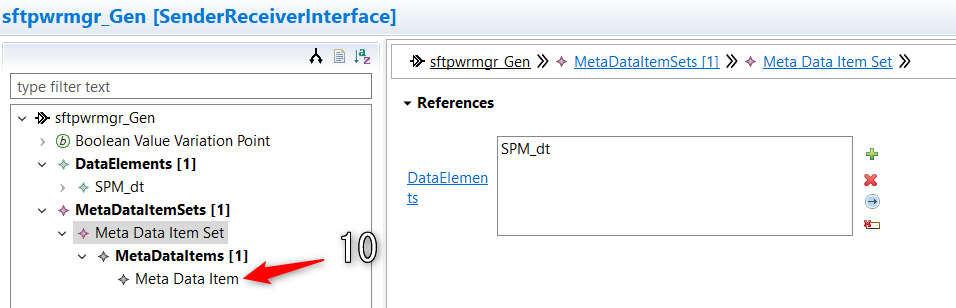
SoAd Configuration
SoAd can interface itself with a Cdd as Upper Layer. SPM needs to use the SoAd as transmitter for the Ethernet wake-up frame, so that SPM acts as SoAd Upper Layer.
When a Cdd acts as Upper Layer for the SoAd, you need to properly configure the SoAd as follows:
Configure the SoAd/SoAdBswModule container as picture SoAdCdd
Make sure that Wake-up frame on Ethernet in configuration containers SoAd/SoAdConfig/SoAdPduRoute and SoAd/SoAdConfig/SoAdSocketRoute as Cdd as SoAdTxUser, SoAdRxUser. Make also sure that Upper Layer is always IF.

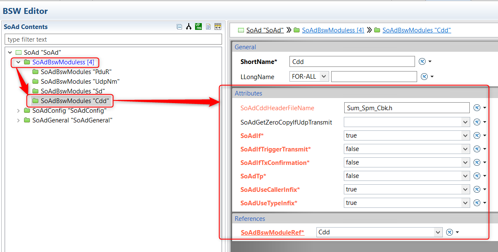
BswM Configuration
SPM can interface itself with the BswM as Upper Layer. SPM needs to the BswM in order to enable/disable PDU groups by exploiting the BswMPduGroupSwitch action.
The following are the needed steps to configure properly the BswM:
Warning
The following is just a guidelines. Refer to the BswM specification on how to properly configure the BswM module.
BswMPduGroupSwitch action
In the container Bswm/BswMConfig/BswMModeControl/BswMAction: #. create a new action #. select the type BswM_PduGroup_Action under the BswMAvailableActions and #. set reference of the PDUGroup in BswMEnabledPduGroup.

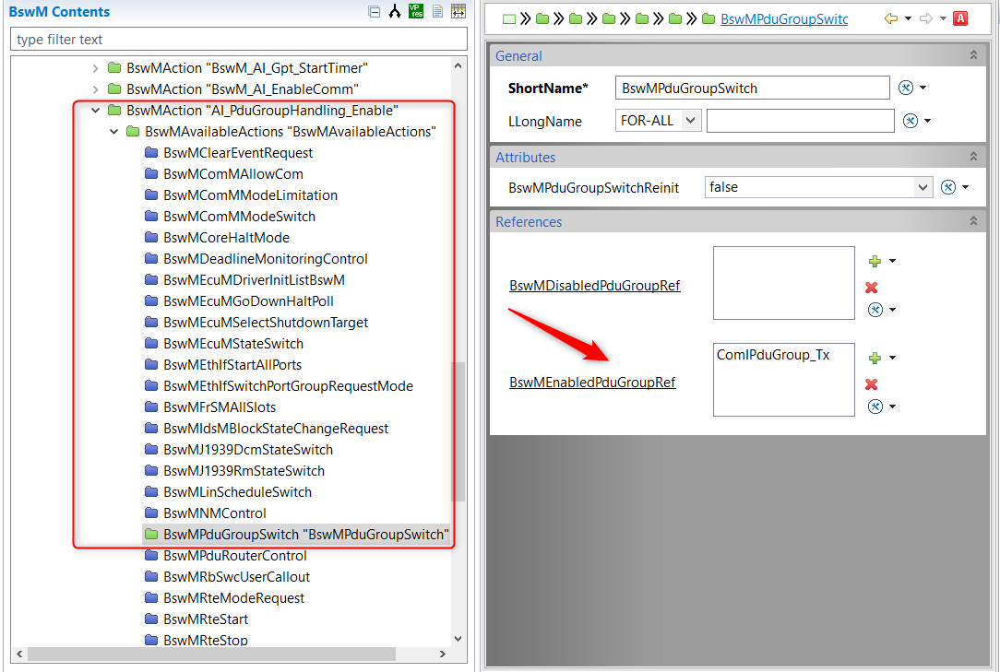
Re-do the same operation as above but set the reference of the PDUGroup in BswMDisabledPduGroup.
Action List
In the container Bswm/BswMConfig/BswMModeControl/BswMActionList, create a new action list with BswMActionListExecution set to BSWM_TRIGGER add a BswmActionListItem and then for BswMActionListItemRef you need to set the reference to the action created in BswMPduGroupSwitch action (previous step).

Re-do the same operation as above but set the reference to BswMActionListItemRef with the other previous action item.
Mode Request Port
In the container Bswm/BswMConfig/BswMArbitration/BswMModeRequestPort create a new Mode Request Port selecting the BSWM_IMMEDIATE value for BswMRequestProcessing. Then, go down from previous container to /BswNModeRequestSource/BswMSwcdModeNotification and configure BswMSwcdModeNotificationModeDeclarationGroupPrototyeRe with the reference to Mode-declaration group SPM_SWCD_PDUGRP.

Mode Condition
In the container BswM/BswMConfig/BswMModeArbitration/BswMModeCondition create the mode condition to enable the Pdu Group. Set the bswMConditionType to BSWM_EQUALS and the BswMConditionMode to the Mode request Port previously created.

Set the BswMModeValueRef of the other BswMModeDeclaration to SPM_PDU_GROUP_ENABLE.

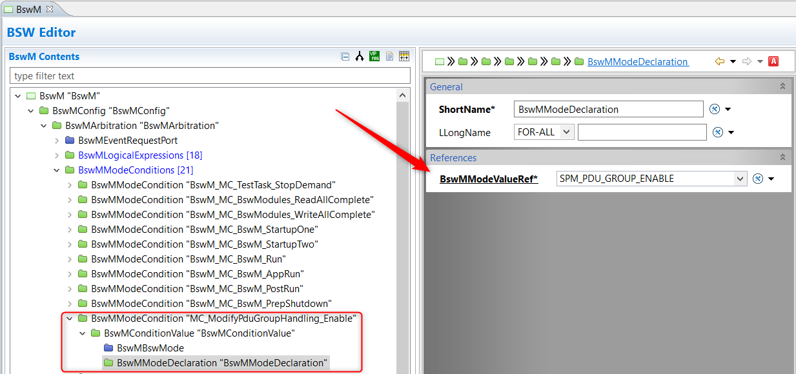
Logical Expressions
In the container Bswm/BswMConfig/BswMModeArbitration/BswMLogicalExpression create one logical expression.

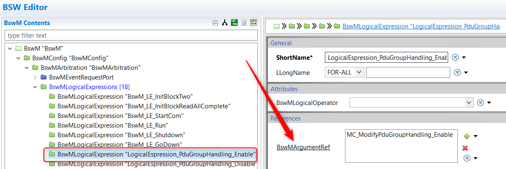
In one BswMLogicalExpression set the BswMArgumentRef to the Mode condition previously created for enable the PDU group.
Action Rules
In the container Bswm/BswMConfig/BswMModeArbitration/BswMActionRule create one action rule. Set the BswMRuleExpressionRef to the logical expression for enable the PDU group. Set the BswMRuleFalseActionList to the action list for disable the PDU group. Set the BswMRuleTrueActionList to the action list for enable the PDU group.

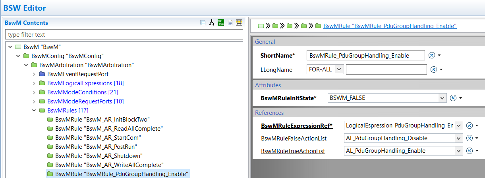
Data Type Settings
In the container BswM/BswMConfig/BswMDataTypeSettings add the ref to DTMS_SPM_SrvcPduGroup.

Port Connection
Connect the PP_SPM_BswM_ComIpduGroup_<<ShortNameOfThePDUGroup>> to the Mode Request Port created previously.

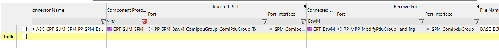
Appendix A: Generic Component Interface
Port Interface |
Type |
Source |
Destination |
Description |
|---|---|---|---|---|
sftpwrmgr_Gen |
S/R |
Spm
LdCom / Com
|
LdCom/Com
Spm
|
Interface contains datatype that represents SM-to-SM message |
sftpwrmgr_heartbeat_Gen |
S/R |
Spm
LdCom / Com
|
LdCom/Com
Spm
|
Interface contains datatype that represents PM-to-PM heartbeat |
SR_SpmSUSD_PermitExecution |
S/R |
Spm |
SUSD |
Interface contains the permit execution value from SUSD |
SR_SpmSUSD_ShutdownPermission |
S/R |
SUSD |
Spm |
Interface contains the shutdown permission to provide to SUSD |
CS_SPM_ProfileRequest |
C/S |
SWC |
Spm |
Interface contains API for (de)activating request of power profile |
SPM_GetDTCIdentifier |
C/S |
SWC |
Spm |
Interface contains API for getting DTC for Target Device from SPM. |
SPM_ServiceActivationStatusNotification |
S/R |
Spm |
SWC |
Interface contains API for informing with the list of all the |
SPM_ComIpduGroup |
M/S |
Spm |
BswM |
Interfaces for switching the ComIpduGroup modes as requested. |
SrvcMgr_SPM_ActivateService |
C/S |
Spm |
SrvcMgr |
INterface for asking to Service Manager the activation of a service. |
Appendix B: History Review
Version |
Description of Change |
Author |
|---|---|---|
0.0.1 |
|
RTA-SUM Development Team |
0.0.2 |
|
RTA-SUM Development Team |
0.0.3 |
|
RTA-SUM Development Team |
0.4.4 |
|
RTA-SUM Development Team |
0.0.5 |
|
RTA-SUM Development Team |
0.0.5_1 |
|
RTA-SUM Development Team |
0.0.6 |
|
RTA-SUM Development Team |
Appendix C: Customer information in scope to current software version
The current RTA-SUM SPM version, contains the module ports to/from RTE for sending and receiving “SPM Traffic frames”. these frames are someIP Pdu, that SPM generates to send/provide information/requests from/to remote(s) SPM. The SPM traffic includes:
SM frame
PM frame (Heartbeat)
Caution
The current version of the SPM can be integrated in the SDK 0.2.0 but the support of the metadata, in scope to RTA-SUM SPM, is not currently enabled. SO that, the metadata handling for these frames are in scope to the integrator.
while SDK 0.2.0 si based on ECU extract IO_Aggregator2_27_27_171.3p0, the current implementation of the RTA-SUM SPM allows also to build the payload of SM and PM frames as per IO_Aggregator2_27_27_174.2p0.
The current version of RTA-SUM SPM requires the Queued communication for the SPM ports that contains the payloads SPM traffic. The queueing specification are directly generated by RTA-SUM SPM code generation. The only thing that is out-of-scope from RTA-SUM SPM code generation is the definition of the port-interfaces for the SPM traffic; in fact they are directly referenced from System description of the integrator.
this means you shall verify that your port definitions are aligned with the following picture:

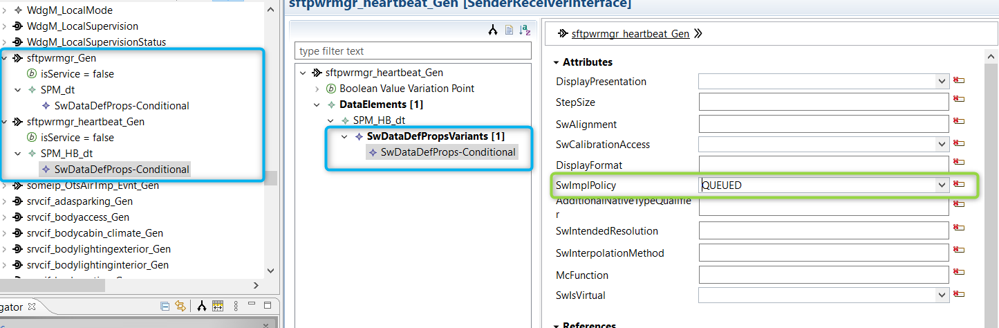
Contacting ETAS
Technical Support
General Enquiries
ETAS Global Headquarters
ETAS Local Sales and Support Offices
Contact details for your local sales office and local technical support team (where available) can be found on the ETAS web site:
ETAS subsidiaries: https://www.etas.com/en/contact.php
ETAS technical support: https://www.etas.com/en/hotlines.php